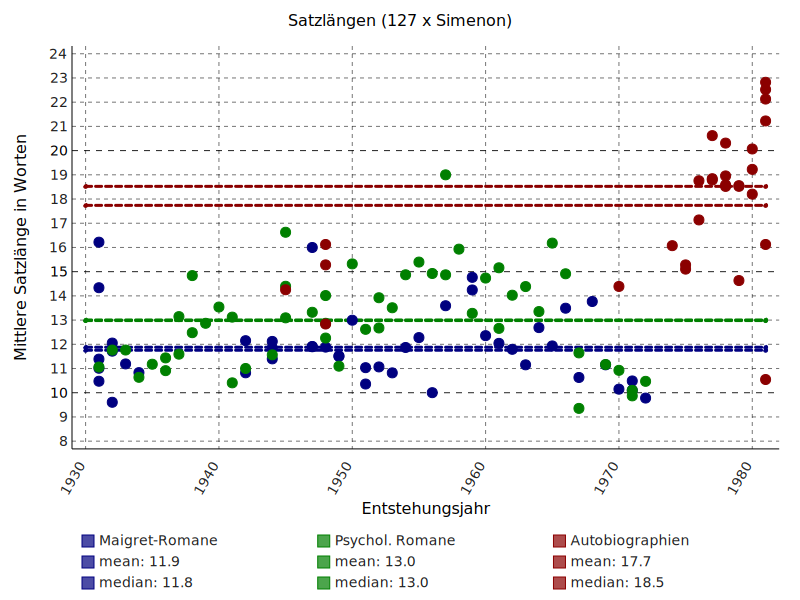

<!doctype html>
<html lang="en">
<head>
<meta charset="utf-8">
<!-- CUSTOMIZE THIS! -->
<title>Wiederholende Forschung</title>
<meta name="author" content="Christof Schöch">
<!-- END -->
<meta name="description" content="Slides">
<meta name="apple-mobile-web-app-capable" content="yes">
<meta name="apple-mobile-web-app-status-bar-style" content="black-translucent">
<meta name="viewport" content="width=device-width, initial-scale=1.0, maximum-scale=1.0, user-scalable=no, minimal-ui">
<link rel="stylesheet" href="css/reveal.css">
<link rel="stylesheet" href="css/theme/simple.css" id="theme">
<!-- Code syntax highlighting -->
<link rel="stylesheet" href="lib/css/zenburn.css">
<!-- Printing and PDF exports -->
<script>
var link = document.createElement( 'link' );
link.rel = 'stylesheet';
link.type = 'text/css';
link.href = window.location.search.match( /print-pdf/gi ) ? 'css/print/pdf.css' : 'css/print/paper.css';
document.getElementsByTagName( 'head' )[0].appendChild( link );
</script>
<!--[if lt IE 9]>
<script src="lib/js/html5shiv.js"></script>
<![endif]-->
</head>

<body>
<div class="reveal">
<div class="slides">
<section data-markdown="" data-separator="^\n---\n" data-separator-vertical="^\n--\n" data-charset="utf-8">
<script type="text/template">

<!--  vvvvv THIS IS WHERE THE CONTENT GOES! vvvvvvv  -->


## Wiederholende Forschung in den digitalen Literaturwissenschaften
<hr/>
<br/>
<br/>
<br/>
Christof Schöch, Würzburg
<br/>
<br/>
<hr/>
<small>[Jahrestagung des DHd-Verbands 2017 "Digitale Nachhaltigkeit"](http://www.dhd2017.ch/)</small>
<br/>
<small>Bern, 13.-18. Februar 2017</small>
<p></img>&nbsp;&nbsp;&nbsp;&nbsp;&nbsp;&nbsp;</img>&nbsp;&nbsp;&nbsp;&nbsp;&nbsp;&nbsp;</img></p>

---
<br/>
## Überblick
* [Wiederholende Forschung](#/2)
* [Erste Fallstudie: Simenon](#/3)
* [Zweite Fallstudie: Racine](#/4)
* [Fazit](#/5)


---
<br/>
# Wiederholende <br/>Forschung

--
## Wiederholende Forschung
<br/>
* die "reproducibility crisis"
* Wiederholbare und wiederholende Forschung
* Digital Humanities ist (oft) wiederholende Forschung
* Kontinuität des gw. Diskurses
* Verhältnis von D und H unter dem Mikroskop
* Inhaltlicher und methodischer Erkenntnisgewinn

--
## Wiederholungsstudien in den DH
<br/>
* Wiederholen eine frühere Untersuchung mit digitalen Mitteln
* Vielfältiges Verhältnis zwischen ursprünglicher und wiederholender Studie
* Entscheidende Faktoren: Fragestellung, Daten, Methoden

--
## Konzeptuelles Feld
<a href="img/wiederholende-forschung.png"></img></a>

---
<br/>
# Erste Fallstudie: <br/>Simenon

--
## Kontext: Richeaudeau über Simenon
<br/>
* Georges Simenon: belgischer Autor
* François Richeaudeau: französischer Literaturwissenschaftler
* Artikel von 1982 zur Satzlänge bei Simenon

--
## Richeaudeaus Thesen
<br/>
* Kein Unterschied zwischen Maigret-Krimis und psychologischen Romanen
* Simenon verwendet ungewöhnlich kurze Sätze
* Zudem: autobiographische Schriften; Proust; Giono

--
## Richeaudeaus Ergebnisse
<br/>
Durchschnittliche Satzlänge in Wörtern
<br/>
<br/>

| Textgruppe                  |    Satzlänge         |
| --------------------------- |:--------------------:|
| Simenon, Maigret-Krimis     |           12,5       | 
| Simenon, psychol. Romane    |           13,2       | 
| Simenon, autobiogr. Texte   |           18,4       | 
| &nbsp;                      |                      | 
| Giono, Romane               |           15,0       | 
| Proust, Recherche           |           43,3       | 


--
## Wiederholungsstudie: Textsammlung
<br/>

| Textgruppe                  |    Anzahl der Texte  |
| --------------------------- |:--------------------:|
| Richeaudeaus Simenon-Texte  |             25       | 
| weitere Texte von Simenon   |            103       | 
| weitere zeitg. Romane       |            475       | 
| Summe                       |            603       | 

--
## Wiederholungsstudie: Vorgehen
<br/>
* (keine explizite Definition bei Richeaudeau; aber siehe Richeaudeau 1984)
* Satz-Segmentierung mit NLTK (auf _Le Monde_ trainiertes Modell)
* Wörter = getrennt durch "\W" (Ausnahmen: "peut-être", "aujourd'hui", etc.)
* Mittelwert, Median, Verteilung werden erhoben
* Statistische Signifikanztests zum Vergleich der Verteilungen


--
## Ergebnisse: Simenon 
<a href="img/sentlen-simenon_127.svg"></img></a>
<br/>
<small>Alle Verteilungen sind signifikant unterschiedlich.</small>

--
## Ergebnisse: Simenon vs. Zeitgenossen
<a href="img/sentlen-romans_101+252.svg"></img></a>
<br/>
<small>Welch's t-Test: p-Wert 0.00004; Mann-Whitney: p-Wert 0.52.</small>

--
## Zwischenbilanz
<br/>
* Explizite Definition von Satz und Wort
* Erst mehr Daten machen Aussagen möglich
* Rolle statistischer Tests 

---
<br/>
# Zweite Fallstudie: <br/>Racine

--
## Kontext: Spitzer über Racine
<br/>
* Jean Racine (1639-1699), französischer Dramatiker
* Leo Spitzer (1887-1960), österreichischer Romanist
* Artikel: "Die klassische Dämpfung in Racines Stil", 1928

--
## Klassische Dämpfung
<br/>
* literarisches Stilprinzip
* musikalische Metapher
* Wirkmächtig: hat Bild von Racine und Klassik geprägt
* Epochenstil vs. Autorenstil

--
## Spitzers Vorgehensweise
<br/>
* "Dämpfung": einheitsstiftendes Prinzip
* aufgefächert in etwa 10 abstrakte Phänomene
* realisiert in rund 50 verschiedenen stilistische Mustern
* illustriert mit 484 Beispielen aus 11 Tragödien Racines

--
## Wiederholungsstudie
<br/>
* von Spitzer beschriebene und illustrierte Phänomene operationalisieren
* in Racines Werk und bei den Zeitgenossen identifizieren
* quantitative Hinweise auf die Frage nach Autorstil / Epochenstil

--
## Textsammlung
<br/>
* Tragödien: 11 x Racine + 38 x Zeitgenossen
* Quelle: http://www.theatre-classique.fr 
* XML-Format mit morphologischer und semantischer Annotation
* Workflow: TEI + Freeling + NLTK + WordNet + Python + TXM/CQP

--
## Beispiel: das entgrenzende 'où'
<br/>
>Zur Konturverwischung trägt auch bei das entgrenzende 'où' ("wo"), das besonders gern bei Abstrakten eintritt, bei denen man sich schwer eine Örtlichkeit, einen umzirkten Raum denken kann, in den das Wo eindringen könnte; (S. 168)

--
## "où": Beispiele bei Spitzer
<br/>
* _"...cette mort où je cours,"_
* _"...la honte où je suis descendue."_
* _"...les déplaisirs où son âme se noie."_
<br/>
<br/>
* _"... diesen Tod, dem ich entgegenstrebe,"_
* _"...die Schmach, zu der ich abgesunken bin."_
* "_...die Ungemach, in der seine Seele ertrinkt."_ 

--
## TXM-Query
<a href="img/txm-query.png"></img></a>
<small>Racine + Zeitgenossen; Genauigkeit?</small>

--
## Racine/Zeitgenossen
<a href="img/signifikanz.svg"></img></a>
<small>30 von 50 Phänomenen; über-/unterrepräsentiert; grün=signifikant (rank-sum test)</small>

--
## Schlussfolgerungen
* "Dämpfung" ist ein Epochenstil, kein Autorenstil!
* Zentrale Herausforderung: Modellierung der stilistischen Muster
* Stärken und Grenzen beider Studien

---
<br/>
# Fazit

--
## Fazit
<br/>
* Richeaudeau: mehr Daten, mehr statistische Tests
* Spitzer: mehr Daten, statistische Tests; Modellierungsproblem

--
## Daten, Code, Plots
<br/>
* Simenon-Projekt: <https://github.com/cligs/projects/tree/master/2016/simenon>
* Racine-Projekt: <https://github.com/cligs/projects/tree/master/2016/racine>

--
## Referenzen
<small>
* Baker, Monya (2016): „Is there a reproducibility crisis?“, in: Nature 533: 452–454.
* Bohannon, John (2015): „Many psychology papers fail replication test“, in: Science Magazine 349.6251: 910–911.
* Camerer, Colin F. et al. (2016): „Evaluating replicability of laboratory experiments in economics“, in: Science Magazine 351.6280: 1433–1436.
* Drummond, Chris (2009): „Replicability is not Reproducibility: Nor is it Good Science“, in: Proceedings of the Evaluation Methods for Machine Learning Workshop at the 26th ICML.
* Gomez, Omar S. / Juristo, Natalia / Vegas, Sira (2010): „Replication, Reproduction and Re-analysis: Three ways for verifying experimental findings“, in: RESER ’2010.
* Padilla, Thomas / Higgins, Devin (2016): „Data Praxis in the Digital Humanities: Use, Production, Access“, in: DH2016: Conference Abstracts 644–646, <http://dh2016.adho.org/abstracts/150>.
* Peng, Roger D. (2011): „Reproducible Research in Computational Science“, in: Science Magazine 334: 1226–1227.
* Richeaudeau, François (1982): „Simenon: une écriture pas si simple qu'on le penserait“, in:
Communication et langages 53: 11–32 10.3406/colan.1982.1484.
* Schöch, Christof (2016): „Does Short Sell Better? Belgian Author George Simenon’s use of sentence length“, in: The Dragonfly’s Gaze, <https://dragonfly.hypotheses.org/922> und <http://
dragonfly.hypotheses.org/1005>.
* Spitzer, Leo ([1928]): „Die klassische Dämpfung in Racines Stil“, in: Romanische Stil- und Literaturstudien I. Marburg: Elwert (1931), 135–268.

</small>


---
<br/>
<br/>
##Vielen Dank!
<br/>
<br/>
<br/>
<br/>
<br/>
<hr/>
<br/>
<small>[Christof Schöch](http://www.christof-schoech.de)<br/>[CC-BY 4.0](https://creativecommons.org/licenses/by/4.0/), 2017</small>


<!--^^^^^^^ DON'T TOUCH UNLESS YOU KNOW WHAT YOU'RE DOING :-) ^^^^^^^-->

</script>
</section>
</div>
</div>


<script src="lib/js/head.min.js"></script>
<script src="js/reveal.js"></script>
<script>
// Full list of configuration options available at:
// https://github.com/hakimel/reveal.js#configuration
Reveal.initialize({
    controls: true,
    progress: true,
    history: true,
    center: true,
    transition: 'slide', // none/fade/slide/convex/concave/zoom
    // Optional reveal.js plugins
    dependencies: [
        { src: 'lib/js/classList.js', condition: function() { return !document.body.classList; } },
        { src: 'plugin/markdown/marked.js', condition: function() { return !!document.querySelector( '[data-markdown]' ); } },
        { src: 'plugin/markdown/markdown.js', condition: function() { return !!document.querySelector( '[data-markdown]' ); } },
        { src: 'plugin/highlight/highlight.js', async: true, callback: function() { hljs.initHighlightingOnLoad(); } },
        { src: 'plugin/zoom-js/zoom.js', async: true },
        { src: 'plugin/notes/notes.js', async: true }
        ]
    });
</script>
</body>
</html>
